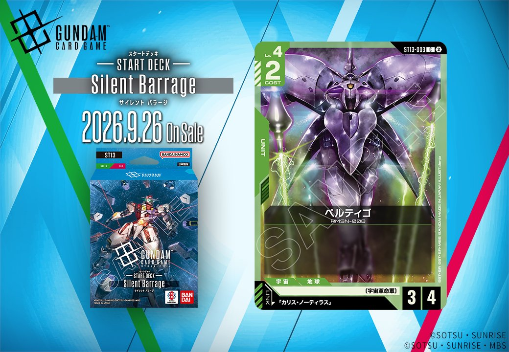

今回は2種のカードを紹介します。1枚目は「Stardust Trails」収録の赤色COMMAND「禁じられた兵器」(GD06-113、2026年10月31日発売)、2枚目は「ST13」収録の緑色UNIT「ベルティゴ」(ST13-003、2026年9月26日発売)です。ベルティゴは「カリス・ノーティラス」を対象とするリンクを持っています。
禁じられた兵器 (GD06-113)
| 色 | 赤 | タイプ | COMMAND |
| Lv | 5 | コスト | 4 |
効果: 【バースト】相手のユニット1つを選ぶ。それに2ダメージを与える。【メイン】/【アクション】ダメージを受けている相手のユニット1つを選ぶ。それに5ダメージを与える。
禁じられた兵器は、【バースト】で相手ユニット1つに2ダメージ、【メイン】/【アクション】ではダメージを受けている相手ユニット1つに5ダメージと、状況で使い分けるコマンドです。【メイン】側は既にダメージを負ったユニットが対象条件なので、格闘戦(ST03-013)や戦技の向上(GD03-109)、GQuuuuuuX(GD03-034)の【配備時】3ダメージなどで先に削ってから5ダメージで仕留める流れが噛み合います。2026-10-31発売で、序盤で条件を満たせない場面では【バースト】の2ダメージが受けとして機能する点も評価できます。

ベルティゴ (ST13-003)
| 色 | 緑 | タイプ | UNIT |
| Lv | 4 | コスト | 2 |
| AP | 3 | HP | 4 |
| 特徴 | 〔宇宙革命軍〕 | ||
| リンク条件 | 「カリス・ノーティラス」 | ||
ベルティゴ(ST13-003)はCOST2でAP3/HP4という、効果なし(バニラ)ながら緑ユニットとして手堅いステータスを持つLv.4ユニットです。COST2でHP4は序盤の壁として機能しやすく、AP3も相応の打点を確保できます。2026-09-26発売で、リンク先「カリス・ノーティラス」を搭載できる〔宇宙革命軍〕デッキでの運用が前提となる一枚です。
関連カード
-
 格闘戦(ST03-013)赤系デッキ内採用率22.1% (1033デッキ)
格闘戦(ST03-013)赤系デッキ内採用率22.1% (1033デッキ) -
 GQuuuuuuX（オメガ・サイコミュ起動時）(GD03-034)赤系デッキ内採用率16.7% (780デッキ)
GQuuuuuuX（オメガ・サイコミュ起動時）(GD03-034)赤系デッキ内採用率16.7% (780デッキ) -
 資源衛星パラオ(GD01-128)赤系デッキ内採用率14.5% (678デッキ)
資源衛星パラオ(GD01-128)赤系デッキ内採用率14.5% (678デッキ) -
 戦技の向上(GD03-109)赤系デッキ内採用率13.2% (620デッキ)
戦技の向上(GD03-109)赤系デッキ内採用率13.2% (620デッキ) -
 GFreD(GD03-035)赤系デッキ内採用率11% (517デッキ)
GFreD(GD03-035)赤系デッキ内採用率11% (517デッキ) -
 ザクⅡ(ST03-008)緑系デッキ内採用率19% (891デッキ)
ザクⅡ(ST03-008)緑系デッキ内採用率19% (891デッキ) -
 リック・ドム(GD01-030)緑系デッキ内採用率18.2% (850デッキ)
リック・ドム(GD01-030)緑系デッキ内採用率18.2% (850デッキ) -
 ザクⅡ（シャア・アズナブル機）(ST03-006)緑系デッキ内採用率12% (560デッキ)
ザクⅡ（シャア・アズナブル機）(ST03-006)緑系デッキ内採用率12% (560デッキ) -
 ウイングガンダムゼロ(GD01-024)緑系デッキ内採用率11.4% (534デッキ)
ウイングガンダムゼロ(GD01-024)緑系デッキ内採用率11.4% (534デッキ) -
 ウイングガンダム(ST02-001)緑系デッキ内採用率11.1% (521デッキ)
ウイングガンダム(ST02-001)緑系デッキ内採用率11.1% (521デッキ)